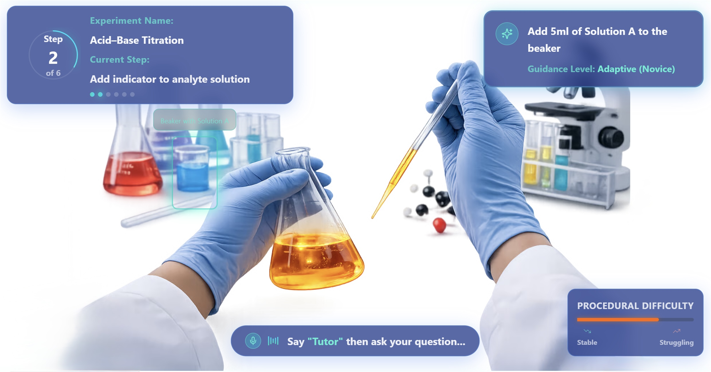
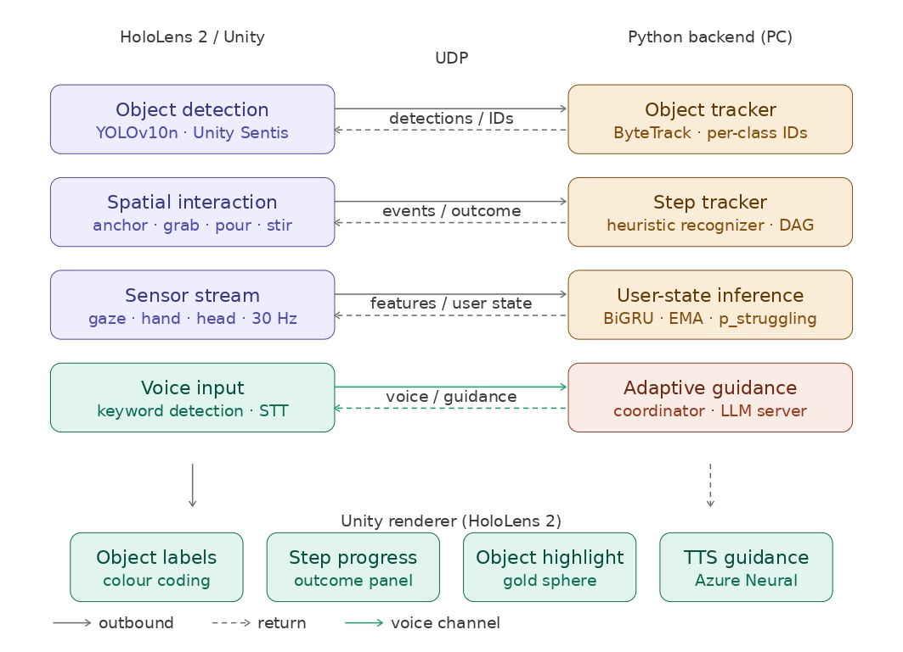
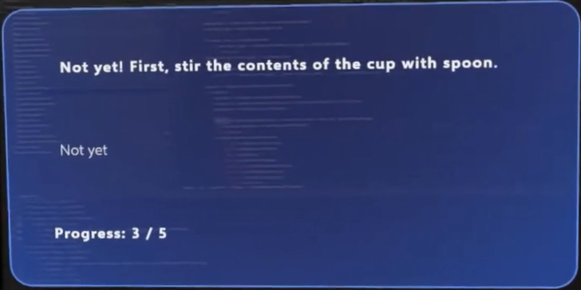
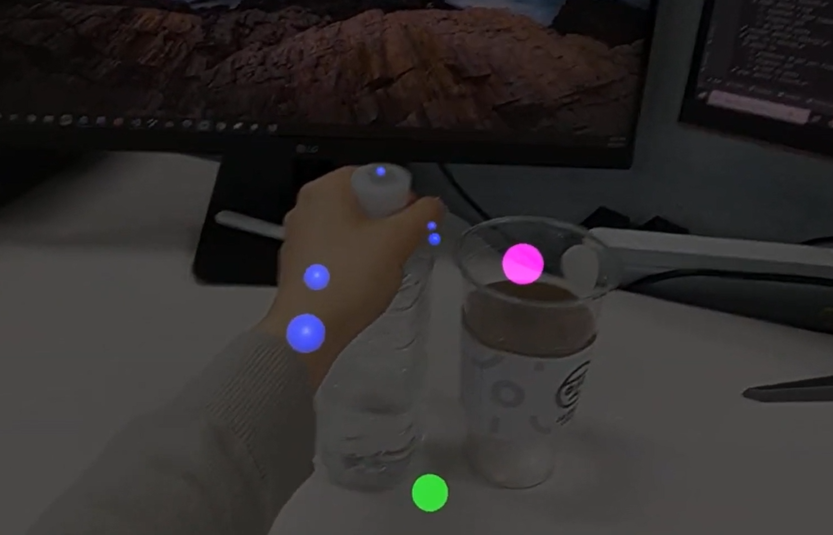
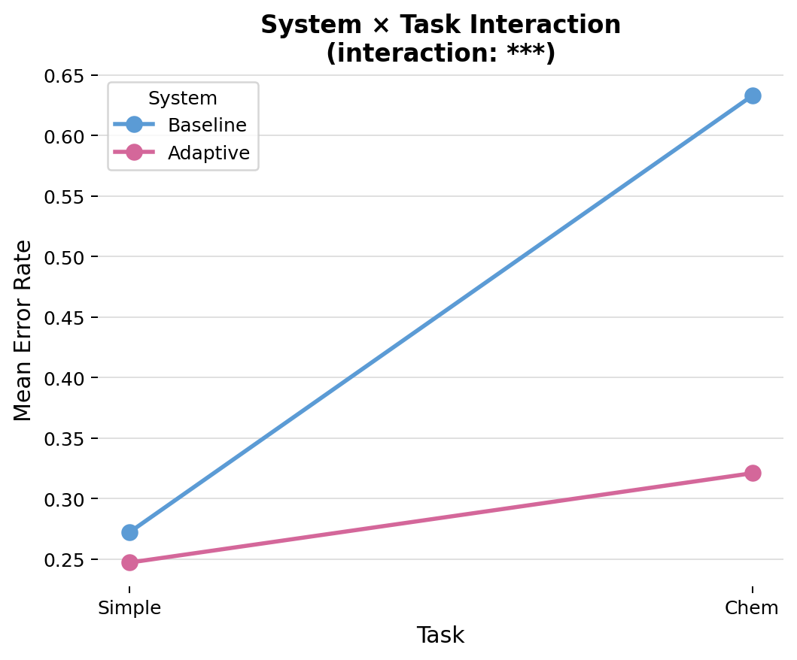
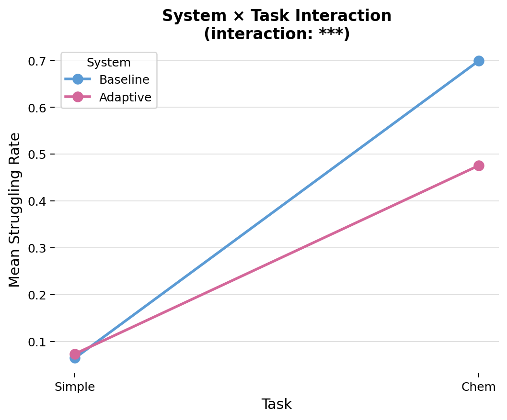
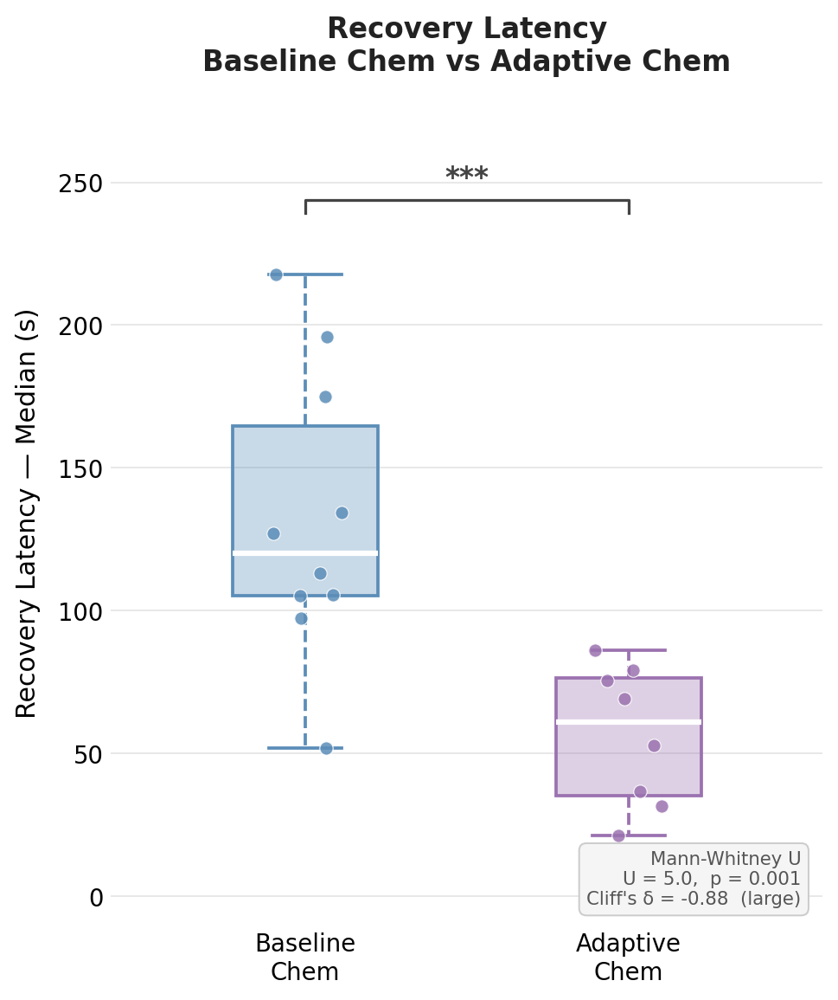
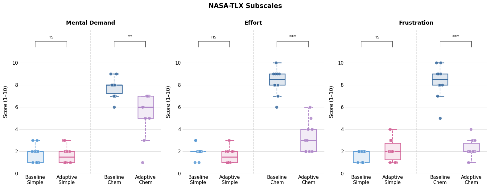

Thesis Teaser Image
Abstract
Mixed reality (MR) guidance systems predominantly rely on static instructions, failing to account for the cognitive and behavioral variability of real-world learners. This thesis presents a multimodal adaptive guidance system for extended reality, designed for procedural laboratory training on the Microsoft HoloLens 2 platform.
The proposed system integrates structured task representation, real-time semantic step tracking, multimodal user state estimation, and LLM-based adaptive guidance into a unified closed-loop architecture. Task progress is modeled as a directed acyclic graph (DAG) generated from natural-language protocols using a large language model, enabling automatic and flexible task structuring, and is tracked in real time through a multimodal action recognition pipeline leveraging sensor data derived from gaze, hand, and head interactions. These multimodal signals are used to estimate users procedural difficulty state, enabling the guidance module to dynamically adapt feedback in terms of granularity, tone, and content.
Evaluation of the guidance generation component shows that incorporating real-time user state signals alongside task context improves response relevance and reduces hallucination compared to context-only baselines.
Experimental results demonstrate robust step tracking performance and low-latency system responsiveness, supporting real-time deployment in immersive laboratory settings.
Overall, this work establishes a practical framework for user state-aware adaptive MR guidance, advancing beyond one-size-fits-all instruction toward personalized learning support.
Keywords
Extended Reality, Large Language Models, Adaptive Learning, Multimodal Data, User State Estimation, AI-Driven Personalization
Problem Statement
Procedural tasks require users to interpret instructions, perform ordered physical actions, monitor their progress, and recover from errors while interacting with real objects. Such tasks are common in laboratory work, technical maintenance, assembly, medical assistance, and everyday skill acquisition. In these settings, mistakes can reduce efficiency, compromise safety, or prevent successful task completion.
Conventional instructional materials — paper manuals, videos, and static checklists — provide useful reference information, but do not actively interpret what the user is doing or adapt support when the user deviates from the intended procedure.
Why Mixed Reality?
Mixed reality offers a promising platform for procedural guidance because it can spatially align digital instructions with the physical workspace while preserving embodied interaction with real tools and objects. Head-mounted MR devices can capture rich multimodal behavioral signals — including gaze, hand motion, head pose, object detections, and interaction events — making MR well suited for situated, step-by-step procedural assistance.
However, moving from static MR instructions to adaptive procedural guidance remains a challenging systems problem. An effective system must not only display the next instruction, but also reason about the current procedural state, interpret whether observed actions are expected or problematic, estimate when the user is experiencing difficulty, and provide assistance without unnecessarily interrupting successful task execution.
Limitations of Prior Work
Prior MR and XR guidance systems have demonstrated the value of spatial cues and interactive instructions, but many remain limited to fixed step sequences or interface-level adaptation — they do not reason about whether an observed action is expected, premature, or recoverable within the procedure.
Egocentric action recognition methods can identify observed activities, but procedural assistance requires interpreting those observations with respect to task dependencies, completion conditions, and possible recovery paths. User-state adaptation introduces a further challenge: latent constructs such as cognitive load or affect are difficult to infer robustly in real-world MR environments.
Our Approach
We focus on observable procedural difficulty — estimated from multimodal behavioral signals available during task execution — rather than latent cognitive constructs requiring intrusive sensing. The proposed system integrates semantic procedural task tracking with behaviorally grounded difficulty estimation within a single real-time closed loop on commodity MR hardware, positioning the contribution as a difficulty-aware adaptive procedural assistance framework, evaluated end-to-end over real physical tasks through a controlled user study.
System Architecture
The system is implemented as a distributed architecture separating lightweight on-device interaction processing from computationally heavier backend inference. The HoloLens 2 client handles real-time sensing, object detection, and user interaction, while a Python backend on a connected PC performs object tracking, step tracking, user-state inference, and adaptive guidance generation.

Fig. 4 — Closed-loop system pipeline: HoloLens 2/Unity client and Python backend communicating over UDP
On-Device Layer (HoloLens 2 / Unity)
01
Object Detection
YOLOv10n runs on-device via Unity Sentis. Task-specific detectors were fine-tuned on images captured directly from the HoloLens 2 workspace (mAP@50 = 0.99). 2D detections are projected into world space using sphere casts from the camera origin.
02
Hand–Object Interaction
MRTK3 skeletal joint data is streamed at ~30 Hz. Grab and release are estimated from finger curl, wrist proximity, and gaze-based disambiguation. A HandProxy mechanism maintains continuous object representation during manipulation when visual detection is unreliable.
03
Spatial Anchoring
Newly detected objects remain unanchored while position is estimated. After repeated spatially consistent detections, objects transition to an anchored state and their transform is frozen. Anchored objects are surfaced through lightweight indicators: white when interactable, pink on gaze fixation, green during manipulation.
04
Voice Input
User speech is captured via keyword-triggered recognition on the headset and forwarded to the backend over a dedicated UDP voice channel. System responses are synthesized using Azure Neural text-to-speech and played back through the HoloLens speakers.
Backend Layer (Python / PC)
05
Object Tracker
ByteTrack runs in per-class mode, associating detections across frames using Kalman filtering and IoU matching to return persistent (track_id, class) identities. Stale tracks are reset after prolonged inactivity; fallback uses class-based nearest-neighbor matching.
06
Semantic Action Recognition
An interaction-centric heuristic recognizer infers semantic actions (grab, place, pour, stir, press) from known object identities, spatial relationships, and temporal constraints. Pour requires sustained object tilt beyond ~45°; stir is detected from circular wrist trajectories; press from index-finger poke.
07
Step Tracker
Each recognized action is validated against the current DAG state. The tracker maintains active branches, completed steps, dependency-satisfaction state, and a history of invalid transitions. Actions are classified into six outcome categories: expected, premature, repeat, harmless, incorrect-recoverable, and incorrect-unrecoverable.
08
User-State Inference
A BiGRU model (two bidirectional GRU layers: 64 and 32 units) processes sliding windows of 30 synchronized multimodal channels. Per-session calibration estimates a participant-specific baseline during a 180s warmup phase; the runtime signal is smoothed with EMA (α = 0.3) and thresholded at the 75th percentile.
09
Adaptive Guidance
Qwen2.5 7B Instruct is served locally via Ollama. The guidance coordinator fuses procedural context and difficulty estimate at prompt construction time. Proactive intervention is gated by a 25s cooldown and interaction-state constraints. Critical violations bypass the LLM and trigger immediate corrective feedback.
MR Guidance Interface
Guidance is delivered through coordinated verbal and visual channels. Task-relevant objects referenced in guidance are highlighted using a pulsating yellow effect. The runtime panel displays the current procedural step, overall progress, and contextual assistance text, aligning natural-language instructions with spatial object references in the MR environment.
User Study Design
A controlled study was conducted to evaluate whether runtime adaptation improves procedural guidance relative to a non-adaptive baseline, across tasks of differing complexity. Twenty participants (graduate and undergraduate students, aged 20–35, M = 23.7, SD = 3.4) were recruited from the university community.
The study used a counterbalanced mixed design with two system conditions and two task types. The baseline condition shared the same task graph, semantic tracking pipeline, instructional content, and MR interface as the adaptive system — differing only by disabling adaptive guidance behavior (proactive intervention, user-state-driven adaptation, object highlighting, and spoken delivery). Two task types were used: a Simple task involving familiar objects and straightforward instructions, and a Chemistry-lab task involving specialized laboratory equipment, domain-specific terminology, and a more complex dependency structure.
| Group |
Task 1 |
Task 2 |
| Group A |
Simple / Baseline |
Chemistry / Adaptive |
| Group B |
Simple / Adaptive |
Chemistry / Baseline |
Note. Counterbalanced assignment ensures every task is novel at first exposure, avoiding task-repetition learning confounds.
Procedure
After eye-gaze calibration and a tutorial on hand-object interaction and voice interaction, a short calibration phase (180s) established participant-specific baseline values for user-state estimation. Participants then performed the assigned tasks while the system tracked procedural state and logged events, behavioral signals, and interventions. After each condition they completed NASA-TLX and a guidance-quality questionnaire (GQI: clarity, confidence, helpfulness, explanation understandability), and provided qualitative feedback at the end.

Baseline system UI panel example
.png)
Adaptive system UI panel example

Simple task objects example
.png)
Chem-lab task objects example
Technical Evaluation
We evaluated the technical performance of the system across three dimensions: reliability of procedural interpretation, runtime responsiveness, and validity of the estimated difficulty signal. Metrics were computed over all recorded study sessions.
| Metric |
Mean |
SD |
| Semantic action recognition F1 |
0.97 |
0.03 |
| Outcome classification F1 |
0.96 |
0.05 |
| Step-completion accuracy |
1.00 |
0.00 |
| Action-to-classification latency |
58 ms |
12 ms |
| Error-to-feedback latency |
77 ms |
65 ms |
| Voice query-to-response latency |
4.8 s |
0.2 s |
Note. F1 and accuracy values are reported as unitless proportions. Latency values are reported in milliseconds (ms) or seconds (s), depending on the pipeline stage.
Validity of the Difficulty Signal
We examined whether the runtime difficulty estimate produced by the user-state model is behaviorally meaningful — specifically, whether it rises before procedural deviations during actual task execution. Normalized difficulty was consistently higher before deviations than during stable execution (mean 0.063 vs. −0.002; Δ = 0.065), confirmed by both a Wilcoxon signed-rank test (W = 204, p < .001) and a paired t-test (t(19) = 4.58, p < .001, d𝑧 = 1.02, large effect). These findings support the use of the difficulty signal as a runtime cue for adaptive guidance.

Fig. 5 — Validity of the Difficulty Signal
Results

Fig. 6 — Mean error rate by condition

Fig. 7 — Mean struggling rate by condition
Both error rate and struggling rate showed a significant System × Task interaction (p < .001). Adaptive guidance had no significant effect during the simple task, but substantially reduced both measures during the complex chemistry task.

Fig. 8 — Recovery latency following procedural deviations (chemistry task)
Participants recovered significantly faster under adaptive guidance (mean 56.5 s) than baseline (mean 132.2 s). Mann–Whitney U = 5.0, p = .001, Cliff's δ = −0.88 (large effect). 74.6% of proactive interventions were immediately followed by successful return to the intended workflow.

Fig. 9 — NASA-TLX subscale scores across conditions
Subjective workload (NASA-TLX) and guidance quality (GQI) both showed a significant System × Task interaction (p < .001). The largest reductions under adaptive guidance occurred in effort and frustration subscales during the complex task.
Research Outputs
-
Thesis
PDF
-
Code
GitHub — to be added
-
Demo
YouTube
-
Data
Anonymized sample logs — to be added
Note on Availability
The full Unity project and complete testing dataset are not publicly uploaded due to file size, dependency complexity, and participant privacy considerations. Instead, selected source code, representative configuration files, anonymized sample logs, and aggregated evaluation results are provided.